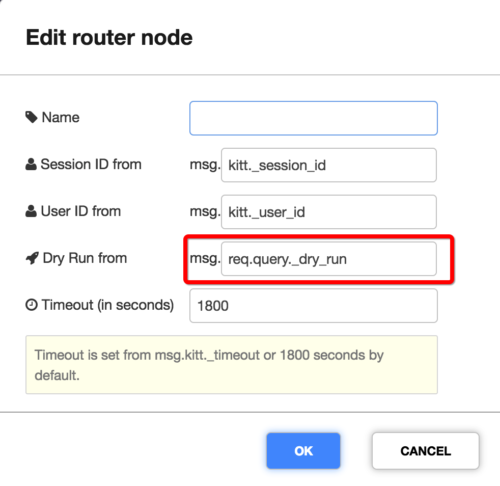
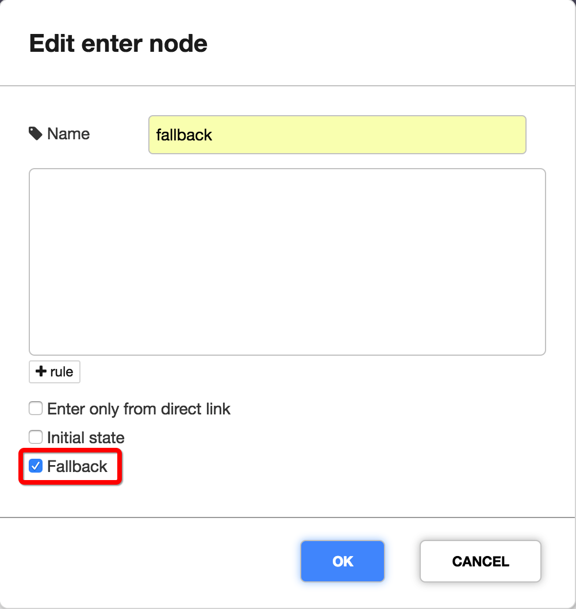
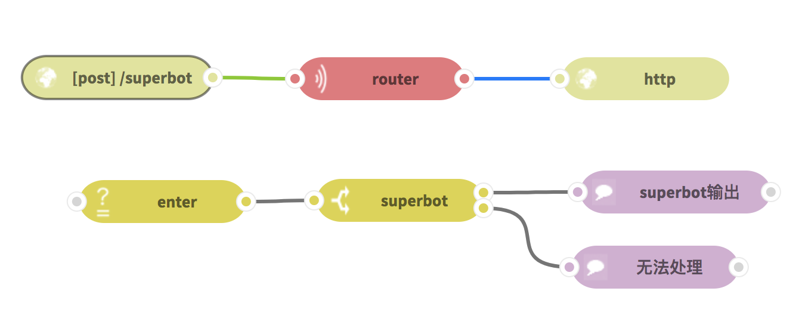
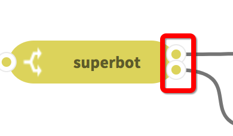

<!DOCTYPE html>
<!--[if IE 8]><html class="no-js lt-ie9" lang="en" > <![endif]-->
<!--[if gt IE 8]><!--> <html class="no-js" lang="en" > <!--<![endif]-->
<head>
  <meta charset="utf-8">
  
  <meta name="viewport" content="width=device-width, initial-scale=1.0">
  
  <title>Superbot介绍 &mdash; ChatFlow 0.1 documentation</title>
  

  
  
    <link rel="shortcut icon" href="_static/favicon.ico"/>
  

  

  
  
    

  

  
  
    <link rel="stylesheet" href="_static/css/theme.css" type="text/css" />
  

  
    <link rel="stylesheet" href="_static/css/custom.css" type="text/css" />
  
    <link rel="stylesheet" href="https://maxcdn.bootstrapcdn.com/font-awesome/4.4.0/css/font-awesome.min.css" type="text/css" />
  

  
        <link rel="index" title="Index"
              href="genindex.html"/>
        <link rel="search" title="Search" href="search.html"/>
    <link rel="top" title="ChatFlow 0.1 documentation" href="index.html"/>
        <link rel="next" title="调试 ChatFlow" href="debug.html"/>
        <link rel="prev" title="多轮对话" href="multi_turn_dialogue.html"/> 

  
  <script src="_static/js/modernizr.min.js"></script>

</head>

<body class="wy-body-for-nav" role="document">

   
  <div class="wy-grid-for-nav">

    
    <nav data-toggle="wy-nav-shift" class="wy-nav-side">
      <div class="wy-side-scroll">
        <div class="wy-side-nav-search">
          

          
            
              <a href="http://ChatFlow.kitt.ai" target="_blank" class="icon icon-home"> ChatFlow
            
          

          
            
            
          
          </a>

          

          
<div role="search">
  <form id="rtd-search-form" class="wy-form" action="search.html" method="get">
    <input type="text" name="q" placeholder="Search docs" />
    <input type="hidden" name="check_keywords" value="yes" />
    <input type="hidden" name="area" value="default" />
  </form>
</div>

          
        </div>

        <div class="wy-menu wy-menu-vertical" data-spy="affix" role="navigation" aria-label="main navigation">
          
            
            
                <ul class="current">
<li class="toctree-l1"><a class="reference external" href="../index.html#://">English Version</a></li>
<li class="toctree-l1"><a class="reference internal" href="index.html">欢迎使用ChatFlow</a></li>
<li class="toctree-l1"><a class="reference internal" href="quickstart.html">快速入门</a></li>
<li class="toctree-l1"><a class="reference internal" href="build_a_bot.html">使用ChatFlow构建第一个bot</a></li>
<li class="toctree-l1"><a class="reference internal" href="dialogue_nodes.html">Node介绍</a></li>
<li class="toctree-l1"><a class="reference internal" href="multi_turn_dialogue.html">多轮对话</a></li>
<li class="toctree-l1 current"><a class="current reference internal" href="#">Superbot介绍</a><ul>
<li class="toctree-l2"><a class="reference internal" href="#id3">介绍</a></li>
<li class="toctree-l2"><a class="reference internal" href="#id4">superbot搭建</a><ul>
<li class="toctree-l3"><a class="reference internal" href="#bot">搭建两个子bot</a></li>
<li class="toctree-l3"><a class="reference internal" href="#id5">改造成superbot</a></li>
<li class="toctree-l3"><a class="reference internal" href="#id6">跨子bot共享数据</a></li>
</ul>
</li>
</ul>
</li>
<li class="toctree-l1"><a class="reference internal" href="debug.html">调试 ChatFlow</a></li>
<li class="toctree-l1"><a class="reference internal" href="dueros.html">使用ChatFlow部署小度技能</a></li>
<li class="toctree-l1"><a class="reference internal" href="supernlu.html">多bot大规模应用实操</a></li>
<li class="toctree-l1"><a class="reference internal" href="version_control.html">版本控制介绍</a></li>
</ul>

            
          
        </div>
      </div>
    </nav>

    <section data-toggle="wy-nav-shift" class="wy-nav-content-wrap">

      
      <nav class="wy-nav-top" role="navigation" aria-label="top navigation">
        
          <i data-toggle="wy-nav-top" class="fa fa-bars"></i>
          <a href="index.html">ChatFlow</a>
        
      </nav>


      
      <div class="wy-nav-content">
        <div class="rst-content">
          


<div role="navigation" aria-label="breadcrumbs navigation">
  <ul class="wy-breadcrumbs">
    
      <li><a href="index.html">Docs</a> &raquo;</li>
        
      <li>Superbot介绍</li>
    
    
      <li class="wy-breadcrumbs-aside">
        
        
          <a href="https://groups.google.com/a/kitt.ai/forum/#!forum/chat" class="fa fa-comments" style="color:#55507c" target="_blank"> Forum</a>
        
        
            
            <a href="_sources/superbot.rst.txt" rel="nofollow"> View page source</a>
          
        
      </li>
    
  </ul>
  <hr/>
</div>
          <div role="main" class="document" itemscope="itemscope" itemtype="http://schema.org/Article">
           <div itemprop="articleBody">
            
  <div class="section" id="superbot">
<span id="id1"></span><h1><a class="toc-backref" href="#id7">Superbot介绍</a><a class="headerlink" href="#superbot" title="Permalink to this headline">¶</a></h1>
<div class="contents topic" id="id2">
<p class="topic-title first">目录</p>
<ul class="simple">
<li><a class="reference internal" href="#superbot" id="id7">Superbot介绍</a><ul>
<li><a class="reference internal" href="#id3" id="id8">介绍</a></li>
<li><a class="reference internal" href="#id4" id="id9">superbot搭建</a><ul>
<li><a class="reference internal" href="#bot" id="id10">搭建两个子bot</a></li>
<li><a class="reference internal" href="#id5" id="id11">改造成superbot</a></li>
<li><a class="reference internal" href="#id6" id="id12">跨子bot共享数据</a></li>
</ul>
</li>
</ul>
</li>
</ul>
</div>
<div class="section" id="id3">
<h2><a class="toc-backref" href="#id8">介绍</a><a class="headerlink" href="#id3" title="Permalink to this headline">¶</a></h2>
<p>Superbot是多个bot的中控系统，假如我们有两个bot，一个给用户提供信用卡缴费的功能，一个给用户提供卡片挂失的功能，我们通常会希望把它作为同一个bot
暴露给用户，即提供信用卡缴费的功能，又提供卡片挂失的功能。</p>
<p>为了让上述的需求实现起来更加方便，我们开发了 <strong>superbot node</strong> ，当前只支持基于 <strong>http in</strong> 和 <strong>http out</strong> 暴露的bot，同时每一个子bot需要
做对应的修改，才能让不同的bot更好的协作起来，对外表现的更像是同一个bot。下面我们会对如何改造子bot，让他们整合起来做详细的介绍。</p>
<dl class="docutils">
<dt>在这篇教程结束之后可以：</dt>
<dd><ul class="first last simple">
<li>创建一个讲笑话的bot和一个缴信用卡的bot</li>
<li>将两个bot通过superbot整合起来，作为一个统一的bot暴露给用户使用</li>
</ul>
</dd>
</dl>
<p>以下视频将为展示整合后的superbot的功能：</p>
<video width="640"  controls>
  <source src="_static/img/superbot/superbot-demo.mp4" type="video/mp4">
  Your browser does not support the video tag.
</video></div>
<div class="section" id="id4">
<h2><a class="toc-backref" href="#id9">superbot搭建</a><a class="headerlink" href="#id4" title="Permalink to this headline">¶</a></h2>
<div class="section" id="bot">
<h3><a class="toc-backref" href="#id10">搭建两个子bot</a><a class="headerlink" href="#bot" title="Permalink to this headline">¶</a></h3>
<p>首先我们需要准备好两个bot:</p>
<p>1. 信用卡缴费的bot：<a class="reference download internal" href="_downloads/信用卡缴费-http-ChatFlow.json" download=""><code class="xref download docutils literal notranslate"><span class="pre">信用卡缴费</span> <span class="pre">ChatFlow</span> <span class="pre">json</span></code></a> ,
<a class="reference download internal" href="_downloads/信用卡缴费-简体-nlu.json" download=""><code class="xref download docutils literal notranslate"><span class="pre">信用卡缴费</span> <span class="pre">NLU</span> <span class="pre">json</span></code></a></p>
<p>2. 讲笑话的bot：<a class="reference download internal" href="_downloads/笑话-ChatFlow.json" download=""><code class="xref download docutils literal notranslate"><span class="pre">讲笑话</span> <span class="pre">ChatFlow</span> <span class="pre">json</span></code></a>,
<a class="reference download internal" href="_downloads/笑话-简体-nlu.json" download=""><code class="xref download docutils literal notranslate"><span class="pre">讲笑话</span> <span class="pre">NLU</span> <span class="pre">json</span></code></a></p>
<blockquote>
<div><div class="admonition note">
<p class="first admonition-title">Note</p>
<p class="last">你需要把NLU项目的endpoint地址配置到对应的ChatFlow项目中。</p>
</div>
</div></blockquote>
<p>现在你对两个ChatFlow中 <strong>http in</strong> 中的API POST数据就可以看到我们bot的输出，只需要将这些API包装进我们的APP或者浏览器中，就可以提供给用户作为bot来使用。</p>
</div>
<div class="section" id="id5">
<h3><a class="toc-backref" href="#id11">改造成superbot</a><a class="headerlink" href="#id5" title="Permalink to this headline">¶</a></h3>
<p>首先我们需要双击打开ChatFlow中每一个子bot的 <strong>router</strong> 节点，然后在Dry Run From中填上 <code class="docutils literal notranslate"><span class="pre">req.query._dry_run</span></code>，如下图</p>

<p>然后我们需要给每一个子bot添加自己不能处理的情况，具体做法如下：</p>
<ol class="arabic simple">
<li>新拉一个 <strong>enter</strong> 节点，然后勾选上 <strong>fallback</strong> 选项。</li>
</ol>

<ol class="arabic" start="2">
<li><p class="first">在 <strong>enter</strong> 节点后面接上一个 <strong>state</strong> 节点，里面添加上代码：</p>
<div class="code javascript highlight-default notranslate"><div class="highlight"><pre><span></span><span class="n">msg</span><span class="o">.</span><span class="n">payload</span> <span class="o">=</span> <span class="p">{</span><span class="n">cannot_answer</span><span class="p">:</span> <span class="n">true</span><span class="p">};</span>
<span class="k">return</span> <span class="n">msg</span><span class="p">;</span>
</pre></div>
</div>
</li>
</ol>
<p>这样我们的子bot就可以对自己不能处理的情况说“不”了。</p>
<p>接下来我们需要创建一个Superbot项目。Superbot项目就是一个普通的ChatFlow项目，只是我们需要
添加一个 <strong>superbot node</strong>。具体图如下：</p>

<div class="admonition note">
<p class="first admonition-title">Note</p>
<p class="last">superbot的 <strong>http in</strong> 节点的请求方法需要和子bot的 <strong>http in</strong> 节点的请求方法一致，在上面的demo中都是POST方法。</p>
</div>
<p>然后双击打开 <strong>superbot node</strong> ，在里面添加上子bot的各个flow的 <strong>http in</strong> 节点的API，在 <strong>sorted by key</strong> 处填上我们需要通过子flow的返回值的哪个字段来选择使用哪个
bot的返回作为superbot的返回值，在当前的例子中是 <code class="docutils literal notranslate"><span class="pre">NLU.intent_score</span></code> 。</p>
<p>这样我们就把两个子flow连起来了。 <strong>superbot node</strong> 会选择分数最高的子flow的相应作为输出，它在
判断选择哪一个bot的时候，并不会真正的去执行enter后面的节点，而只会把router前面的节点生成
的值和当前消息符合的enter节点的数量一起返回。也就是说你不需要担心superbot会有副作用，他没有选择的bot并不会去执行enter后面的节点，
但是这也表示你只能使用router节点前生成的数据作为子bot排序选择的依据，在我们的例子中，我们就是通过router节点前面的
NLU节点的生成值来进行bot的选择的。</p>
<p>你会注意到 <strong>superbot node</strong> 有两个输出节点，像下图这样：</p>

<p>第一个节点表示有一个子bot处理了当前用户的消息，然后这个子bot的输出会通过这个节点的连线发送出去。
而第二个节点表示当前没有一个子bot可以处理当前用户的信息，<strong>superbot node</strong> 获取到的信息会原封不动的
通过当前节点传递下去。很明显这两个节点在同一时间有且仅有一个节点可以输出数据。</p>
<p>你可以直接下载superbot的例子，导入到你的项目中进行测试： <a class="reference download internal" href="_downloads/superbot-demo.json" download=""><code class="xref download docutils literal notranslate"><span class="pre">讲笑话</span> <span class="pre">ChatFlow</span> <span class="pre">json</span></code></a></p>
<div class="admonition note">
<p class="first admonition-title">Note</p>
<p class="last">导入上述superbot的文件后，你需要将superbot中配置的API替换成你自己部署的bot的API。</p>
</div>
</div>
<div class="section" id="id6">
<h3><a class="toc-backref" href="#id12">跨子bot共享数据</a><a class="headerlink" href="#id6" title="Permalink to this headline">¶</a></h3>
<p>有时候我们会需要两个bot被整合成同一个superbot后，他们的数据也是共享的，比如有一个信用卡缴费bot和一个卡片挂失的bot，
我们希望在一个bot中获取用户身份信息之后，在另外一个bot里也能拿到用户的身份信息，而不用在第二个bot里再获取一次。</p>
<p>我们可以把需要共享的数据存储在Superbot的项目中，然后在项目中的 <strong>superbot</strong> 节点前将需要共享的数据添加到  <code class="docutils literal notranslate"><span class="pre">msg.payload</span></code> 中，
这样每个子flow就可以获取到共享的值，拿到这个值之后就可以做对应的处理了。</p>
</div>
</div>
</div>


           </div>
          </div>
          <footer>
  
    <div class="rst-footer-buttons" role="navigation" aria-label="footer navigation">
      
        <a href="debug.html" class="btn btn-neutral float-right" title="调试 ChatFlow" accesskey="n">Next <span class="fa fa-arrow-circle-right"></span></a>
      
      
        <a href="multi_turn_dialogue.html" class="btn btn-neutral" title="多轮对话" accesskey="p"><span class="fa fa-arrow-circle-left"></span> Previous</a>
      
    </div>
  

  <hr/>

  <div role="contentinfo">
    <p  style="color:#999;">
        &copy; Copyright 2016, KITT.AI.
      Last updated on Jun 27, 2018.

    </p>
  </div> 

  <div>

    <p>
      Made with <i class="fa fa-heart" style="color:red;"></i> in the city of
      <i class="fa fa-coffee" style="color:#6F4E37;"></i>
      <i class="fa fa-umbrella" style="color:#007FFF;"></i>
      <i class="fa fa-plane" style="color:#0F52BA;"></i>
      <i class="fa fa-diamond" style="color:#50C878;"></i>
    </p>
  </div>

</footer>

        </div>
      </div>

    </section>

  </div>
  


  

    <script type="text/javascript">
        var DOCUMENTATION_OPTIONS = {
            URL_ROOT:'./',
            VERSION:'0.1',
            COLLAPSE_INDEX:false,
            FILE_SUFFIX:'.html',
            HAS_SOURCE:  true
        };
    </script>
      <script type="text/javascript" src="_static/jquery.js"></script>
      <script type="text/javascript" src="_static/underscore.js"></script>
      <script type="text/javascript" src="_static/doctools.js"></script>
      <script type="text/javascript" src="_static/js/anchor.js"></script>

  

  
  
    <script type="text/javascript" src="_static/js/theme.js"></script>
  

  
  
  <script type="text/javascript">
      jQuery(function () {
          SphinxRtdTheme.StickyNav.enable();
      });
  </script>
   

</body>
</html>